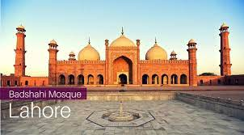
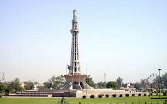
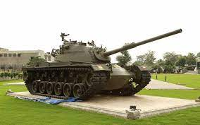
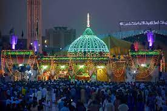

Punjab is one of the four provinces of Pakistan. Located in central-eastern region of the country, Punjab is the second-largest province of Pakistan by land area and the largest province by population. It shares land borders with the Pakistani provinces of Khyber Pakhtunkhwa to the north-west, Balochistan to the south-west and Sindh to the south, as well as Islamabad Capital Territory to the north-west and Autonomous Territory of AJK to the north. It shares an International border with the Indian states of Rajasthan and Punjab to the east and Indian-administered Kashmir to the north-east. Punjab is the most fertile province of the country as River Indus and its four major tributaries Ravi, Jhelum, Chenab and Sutlej flow through it.
Places to Visit in Punjab:The Badshahi Mosque (Urdu, Punjabi: بادشاہی مسجد; literally The Royal Mosque) is a Mughal-era congregational mosque in Lahore, capital of the Pakistani province of Punjab.[1][2] The mosque is located west of Lahore Fort along the outskirts of the Walled City of Lahore, and is widely considered to be one of Lahore's most iconic landmarks.
Minar E Pakistan (Urdu: مینارِ پاکستان, literally "Tower of Pakistan") is a tower located in Lahore, Pakistan.[2] The tower was built between 1960 and 1968 on the site where the All-India Muslim League passed the Lahore Resolution (which was later called the Pakistan Resolution) on 23 March 1940
Army Museum Lahore (Urdu: پاک فوج متحف لاہور) is a museum located in Lahore documenting the military history of the Pakistan Army.[1] Established in 2017, it is based on Lahore Cantonment land opposite Lahore Airport. The museum is Pakistan's second largest collection of military objects in the country.
Data Darbar (also spelt Data Durbar; Urdu: داتا دربار), located in the city of Lahore (Punjab, Pakistan), is the largest Sufi shrine in South Asia.[1] It was built to house the remains of Ali Hujwiri, commonly known as Data Ganj Baksh, a Sufi saint from Ghazni in present-day Afghanistan, who is believed to have lived on the site in the 11th century CE
